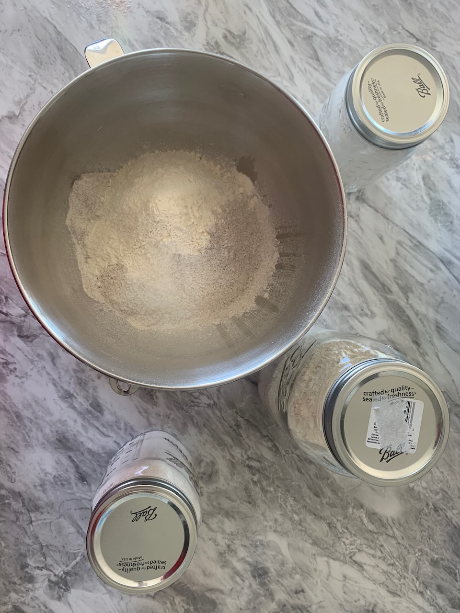
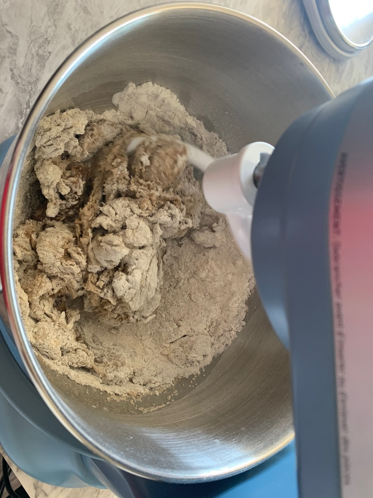
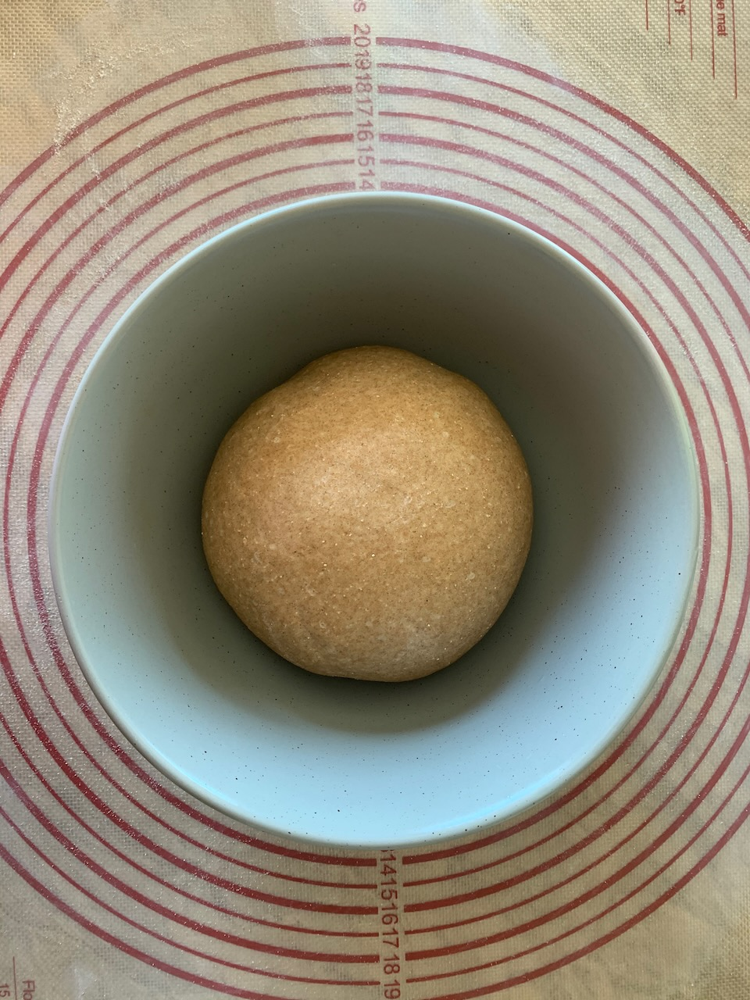
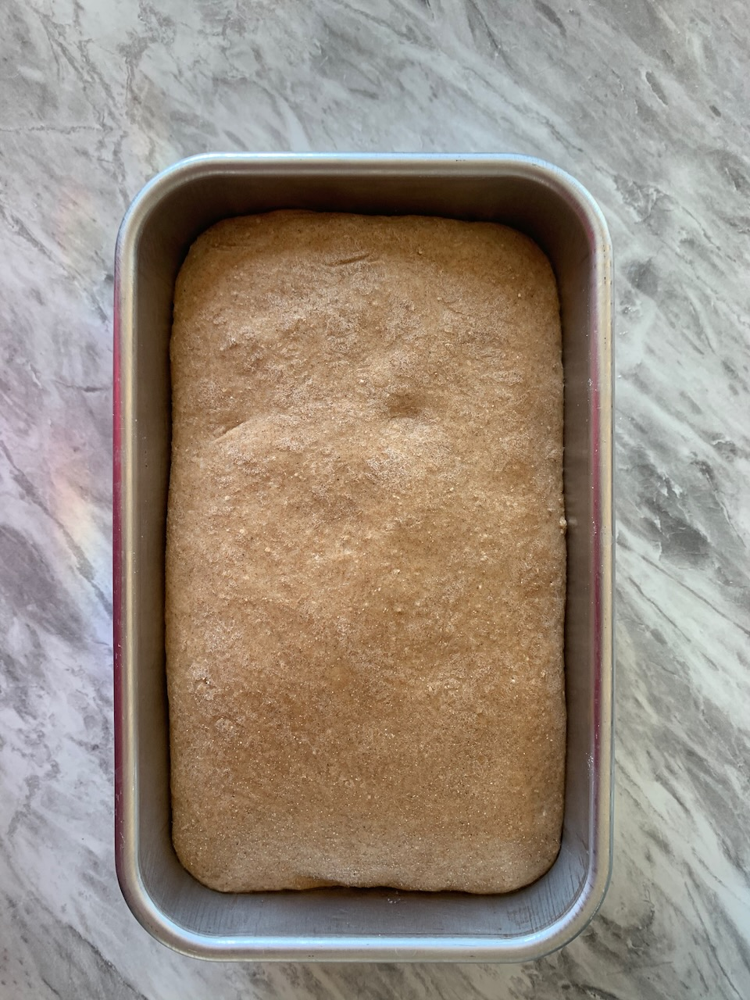
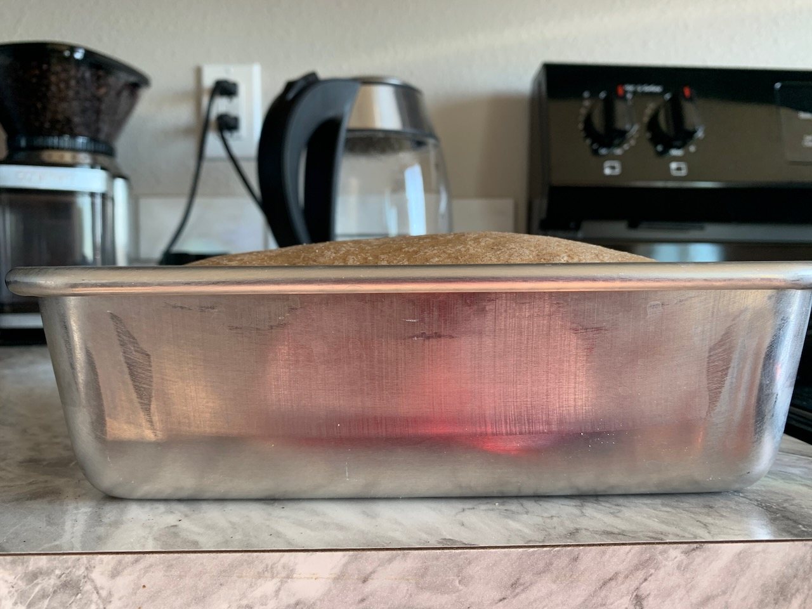
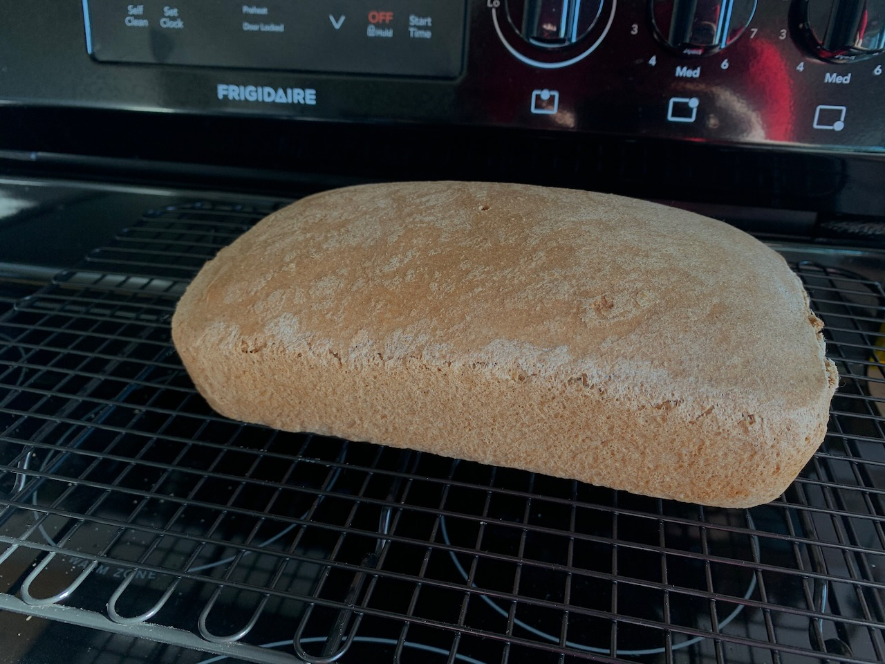

Welcome to the first entry in a series of adventures with bread (Breadventures). This is a fun project I decided to put together about my experiments, successes, and failures with baking bread at home. I'll be sharing my recipes and ingredients list. Pictures and maybe some video.
This first post finds us in the kitchen with a 500g loaf comprised of 200g whole wheat flour, 200g rye flour, and 100g of unbleached white flour. Added to this loaf is 10g of salt, 60ml of avocado oil, and roughly 11g of active dry yeast.
So here's where the issue occurred. I didn't hydrate and revive my yeast. My current source for bread learning is a book by Paul Hollywood of the Great British Bake Off fame. 100 Great Breads is a wonderful source when you read it properly. I chose to read the passage about yeast with a little more interpretation than I think is recommended. You see, he uses “fresh yeast” which I haven't found at my local Winco (I need to expand my search locations). From what I can tell, just tossing the yeast into my mix was a mistake that affected my loaf.
Ever since I started using the Chicken Aide, my hands have continually thanking me. It definitely makes the beginning of making the loaf a cleaner affair. This loaf came together really well and once it was together, I did a bit of extra kneading and checked the gluten structure with the good old window pane test.
I was running around cleaning during the first proof so I didn't get an exact time for the full first proofing. Once the first proof was done, I took it and removed the air. I've had some experience with this working. I then wrapped the dough into a sausage shape with a greased up loaf tin (I used more avocado oil) and let it rest until it rose just above the edge of the tin.
 Into the over it went for about 33 minutes at 425º F. I typically use the 200º mark as the identifier that the loaf is done inside. It makes a hole in the crust but it's a very small hole.
Back to the yeast, this loaf didn't really develop either in size or flavor. I think the main reason is the lack of revitalized yeast. There certainly was a rise but it wasn't as vigorous as previous loaves that I've made. I think I'll make the same loaf next time just making sure to activate the yeast.
